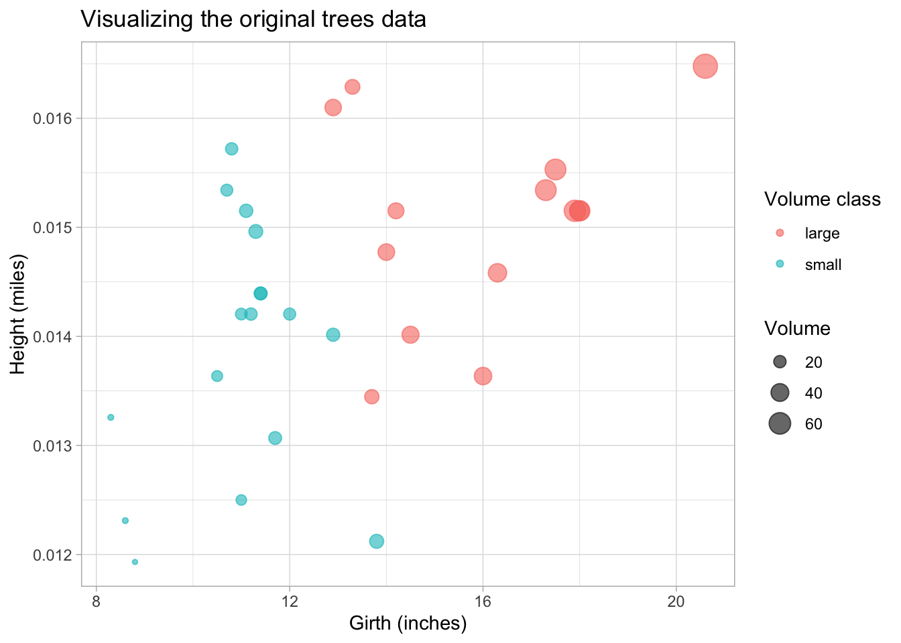
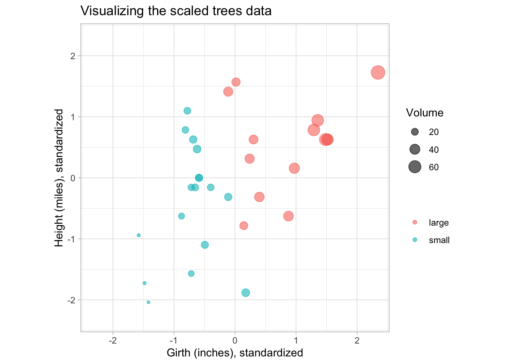
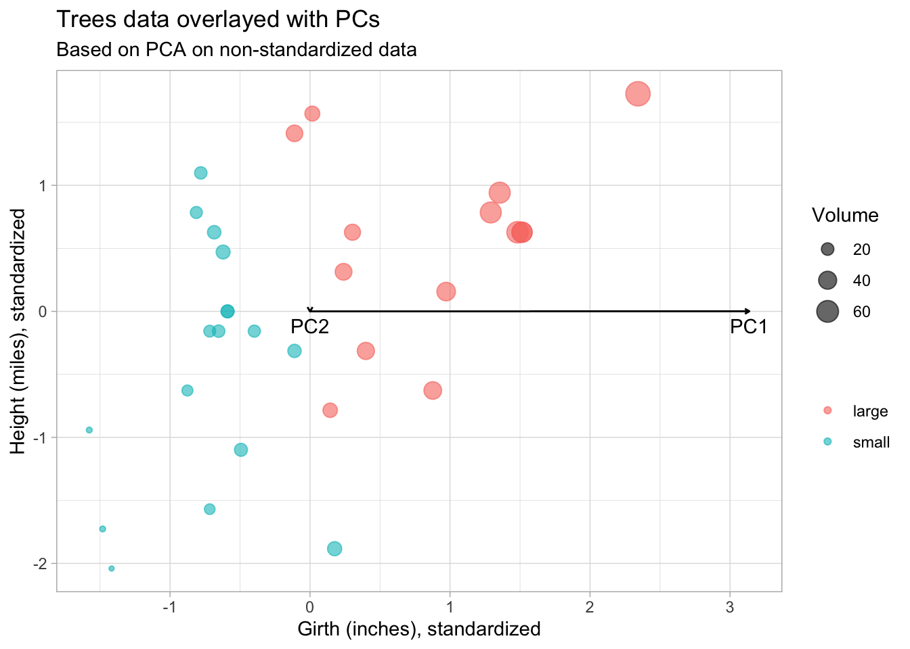
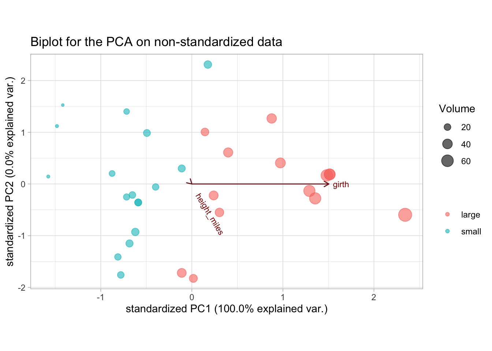
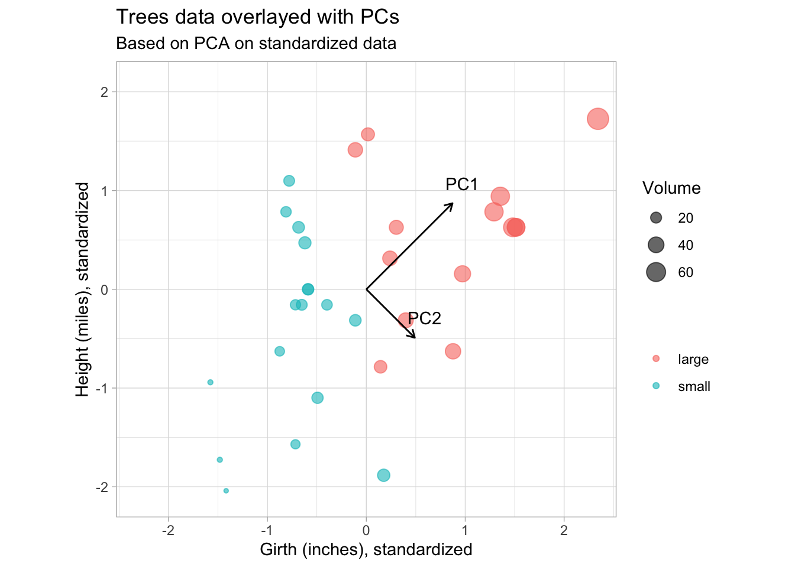
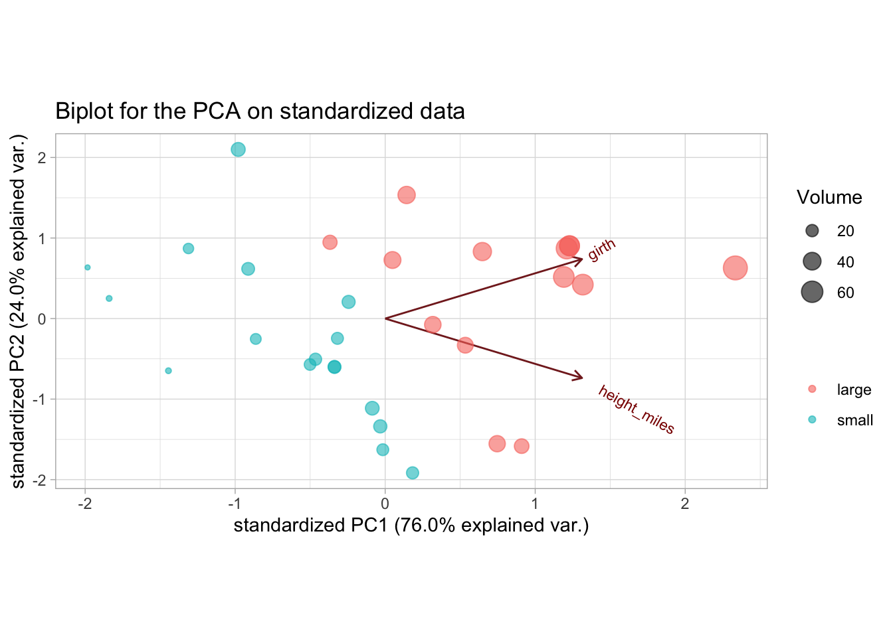
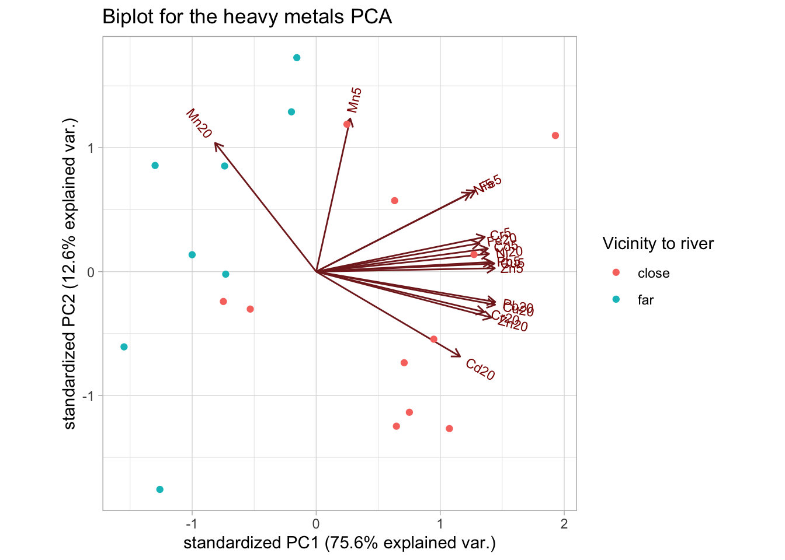
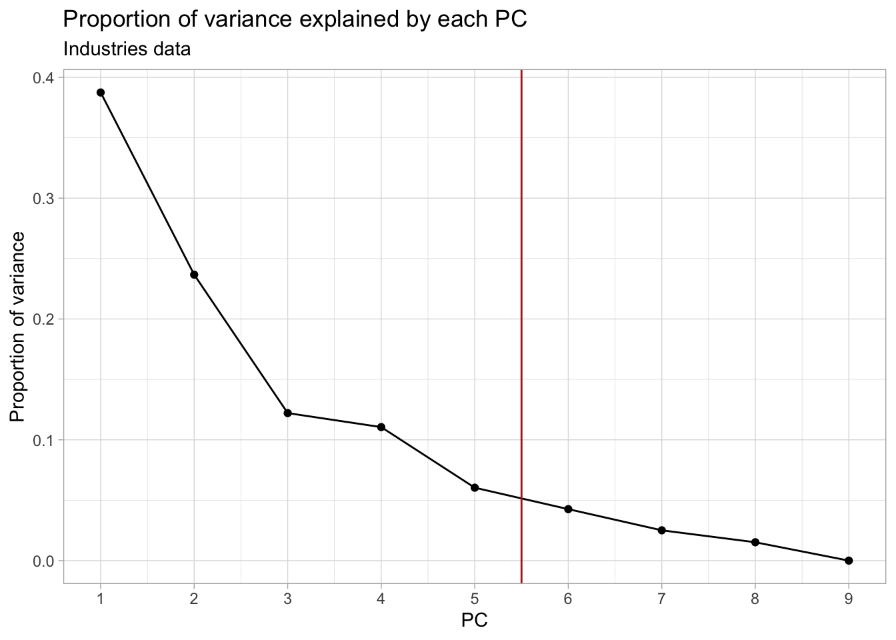
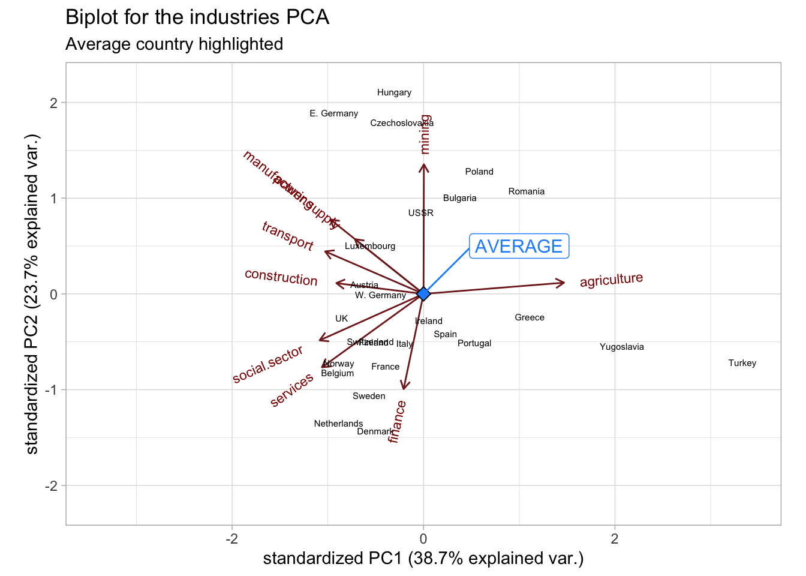

Lab 2: Principal Component Analysis
High Dimensional Data Analysis practicals
Adapted by Milan Malfait
10 Feb 2022
(Last updated: 2022-02-10)
Change log
## Install necessary packages with:
# install.packages("tidyverse")
# install.packages("ggrepel")
# if (!requireNamespace("remotes", quietly = TRUE)) {
# install.packages("remotes")
# }
# remotes::install_github("statOmics/HDDAData")
# remotes::install_github("vqv/ggbiplot")
library(tidyverse)
theme_set(theme_light())
library(ggbiplot)
library(ggrepel)
library(HDDAData)1 Introduction
The first part of this lab demonstrates the influence of standardizing the data (i.e. working on the correlation matrix vs. working on the covariance matrix). Pay attention to what the output looks like and how it links to the biplot.)
2 PCA demonstration
2.1 Data prep
We will load the trees dataset (from base R, see ?trees for more info) that contains the
height of a tree (in feet), the girth (or diameter in inches) and the volume (in cubic feet)
of the tree. For the purpose of this exercise, we will convert the continuous volume variable to a
categorical variable (a factor in R lingo). A tree will be considered large if its volume is
bigger than 25 cubic feet, and small otherwise.
# Load data
data(trees)
# Convert volume to factor
trees$vol_fac <- as.factor(ifelse(trees$Volume > 25, "large", "small"))
# Preview data
head(trees)summary(trees)
#> Girth Height Volume vol_fac
#> Min. : 8.30 Min. :63 Min. :10.20 large:14
#> 1st Qu.:11.05 1st Qu.:72 1st Qu.:19.40 small:17
#> Median :12.90 Median :76 Median :24.20
#> Mean :13.25 Mean :76 Mean :30.17
#> 3rd Qu.:15.25 3rd Qu.:80 3rd Qu.:37.30
#> Max. :20.60 Max. :87 Max. :77.00Now suppose that the height was actually measured in miles instead of feet.
## Create new column in trees with height in miles
trees$height_miles <- trees$Height / 5280
# Create matrix using height_miles and Girth variables
tree_mx <- cbind("height_miles" = trees$height_miles, "girth" = trees$Girth)
head(tree_mx)
#> height_miles girth
#> [1,] 0.01325758 8.3
#> [2,] 0.01231061 8.6
#> [3,] 0.01193182 8.8
#> [4,] 0.01363636 10.5
#> [5,] 0.01534091 10.7
#> [6,] 0.01571970 10.8Always good to visualize the data. Here we plot the height (in miles) vs. the girth for each tree and size the dots according to their volume. We also use a color aesthetic to distinguish “large” and “small” trees.
trees_plot <- ggplot(trees) +
geom_point(aes(Girth, height_miles, size = Volume, col = vol_fac),
alpha = 0.6) +
labs(x = "Girth (inches)", y = "Height (miles)",
color = "Volume class")
trees_plot +
ggtitle("Visualizing the original trees data")
Pay attention to the units on the axis and the (very) different orders of the units.
Q: looking at this plot, can you make a guess in which direction the largest variation lies, i.e. in which direction the first principal component would lie?
To help with visualization of the PCs later on, we also make the plot using the centered and
scaled data. The scale function can be used for this, so that all variables have mean 0 and unit
variance.
## Center and scale data
trees_scaled <- scale(tree_mx, center = TRUE, scale = TRUE)
trees_scaled_plot <- trees_scaled %>%
## Convert to data.frame and re-add Volume columns for plotting
data.frame(Volume = trees$Volume, vol_fac = trees$vol_fac) %>%
ggplot() +
geom_point(aes(girth, height_miles, size = Volume, col = vol_fac),
alpha = 0.6) +
labs(x = "Girth (inches), standardized", y = "Height (miles), standardized",
color = "")
trees_scaled_plot +
ggtitle("Visualizing the scaled trees data") +
coord_equal(xlim = c(-2.3, 2.3), ylim = c(-2.3, 2.3))
2.2 Run PCA
We run PCA on the height (in miles) and girth variables and inspect the results.
# Run PCA with prcomp function, which uses SVD internally (see ?prcomp)
# Note that prcomp centers the matrix internally by default but does not scale it
# (center = TRUE, scale. = FALSE)
tree_pca <- prcomp(tree_mx)
summary(tree_pca)
#> Importance of components:
#> PC1 PC2
#> Standard deviation 3.138 0.001031
#> Proportion of Variance 1.000 0.000000
#> Cumulative Proportion 1.000 1.000000Note: The first component explains almost 100% of the variability in the data.
The loadings of the PCA are stored in the $rotation slot of the prcomp result, while the
$sdev slot contains the standard deviations of the principal components.
tree_pca$rotation
#> PC1 PC2
#> height_miles 0.0001996911 -0.9999999801
#> girth 0.9999999801 0.0001996911
tree_pca$sdev
#> [1] 3.138138679 0.001031321Remember that the Principal Components are linear combinations of the original variables. The loadings tell you what the contribution (or weight) of each variable is to the PC. Here we see that the first PC is completely dominated by the girth variable, while the second component is basically (the negative) height variable. Since the PCs are ordered by the amount of variance they retain from the original data, we would conclude that most of the variance in the data comes from the girth variable.
Q: Is this in line with what you expected from the original plot? Why not? (Think about the units we are using here!)
The result from prcomp also contains an $x slot, which contains the projected values of the
original data matrix onto the principal components (also called the PC scores). This is what we
will use to construct the PCA plot.
2.2.1 Visualize Principal Components
Scale the PC loadings by their standard deviations (singular values) to project them back to the
original data space. We also transpose the rotation matrix so that the variables are in columns
and PCs in the rows, so that we can overlay them on the original trees plot.
## Transpose the loadings so that the PCs are in the rows, for plotting
pc_loadings <- t(tree_pca$rotation) * tree_pca$sdev
## Reuse plot from before and add PCs
trees_scaled_plot +
geom_segment(
data = data.frame(pc_loadings),
aes(x = 0, xend = girth, y = 0, yend = height_miles),
arrow = arrow(length=unit(0.1,"cm"))
) +
geom_text(
data = data.frame(pc_loadings),
aes(x = girth, y = height_miles, label = rownames(pc_loadings)),
vjust = 1.5
) +
ggtitle("Trees data overlayed with PCs",
subtitle = "Based on PCA on non-standardized data")
From this plot we see that the PCs are not in the directions we expected. PC1 should point in the direction of greatest variability.
2.2.2 Visualize PCA with biplot
ggbiplot(tree_pca, groups = trees$vol_fac, alpha = 0) +
## Add points layer to color and size points
geom_point(aes(col = trees$vol_fac, size = trees$Volume), alpha = 0.6) +
labs(size = "Volume", col = "") +
theme(aspect.ratio = 0.6) +
ggtitle("Biplot for the PCA on non-standardized data")
We see that trees high in volume tend to have a high tree girth, but the height does not give any information on tree volume. This is likely wrong, since we know that the height of a tree should have at least some influence on its volume. The problem here is that because of the 2 very different unit measures (miles and inches), the influence of the girth is inflated just because the order of the scale is much larger.
This is also reflected in the variances of these variables:
We see that the variance of the girth variable is several orders of magnitude larger than that of the height (again, because of the different units) and this is reflected in the PCA.
We could use the same units, or we could standardize the variables by dividing by their standard deviations. Both will lead to a more balanced picture of the variability. Of course in this case one can argue that the variables should have the same unit but not be standardized, which may be a valid argument, were it not that we are measuring two different things (the height and the diameter). So even if we used the same units, it is recommended to also standardize the variables.
Imagine if we would be measuring the mass (\(kg\)) of the tree and the girth (\(m\)) of the tree, the scale on which both should be measured is no longer clear, since niether kilograms can be converted to meters nor meters converted to kilograms. In this case we have a clear argument to work on the standardized variables.
2.3 Redo PCA on standardized variables
We will leave the height on the miles scale, but now we will standardize the variables before
performing the PCA. I.e. in addition to centering the matrix (subtracting the column means), we
also divide it by its column standard deviations. Note that these operations can be done in one go
with the prcomp function by specifying center = TRUE and scale. = TRUE (note the .!).
## Compute PCA on centered and scaled matrix
tree_pca_scaled <- prcomp(tree_mx, center = TRUE, scale. = TRUE)
summary(tree_pca_scaled)
#> Importance of components:
#> PC1 PC2
#> Standard deviation 1.2326 0.6933
#> Proportion of Variance 0.7596 0.2404
#> Cumulative Proportion 0.7596 1.0000
tree_pca_scaled$rotation
#> PC1 PC2
#> height_miles 0.7071068 -0.7071068
#> girth 0.7071068 0.7071068
tree_pca_scaled$sdev
#> [1] 1.2325908 0.6933397We will again plot the original data, but this time using the scaled and centered values, and overlay the plot with the PCs.
pc_scaled_loadings <- t(tree_pca_scaled$rotation) * tree_pca_scaled$sdev
## Reuse plot from before and add PCs
trees_scaled_plot +
geom_segment(
data = data.frame(pc_scaled_loadings),
aes(x = 0, xend = girth, y = 0, yend = height_miles),
arrow = arrow(length=unit(0.2,"cm"))
) +
geom_text(
data = data.frame(pc_scaled_loadings),
aes(x = girth, y = height_miles, label = rownames(pc_scaled_loadings)),
nudge_x = 0.1, nudge_y = 0.2
) +
coord_equal(xlim = c(-2.3, 2.3), ylim = c(-2.1, 2.1)) +
ggtitle("Trees data overlayed with PCs",
subtitle = "Based on PCA on standardized data")
This is more in line with our expectations. PC1 point in the direction of greatest variability, with PC2 orthogonal and pointing in the direction of second greatest variabilty.
Also note from the lengths of the PC vectors that the contributions of height and girth are equal to both PCs.
The biplot:
ggbiplot(tree_pca_scaled, groups = trees$vol_fac, alpha = 0) +
## Add points layer to color and size points
geom_point(aes(col = trees$vol_fac, size = trees$Volume), alpha = 0.6) +
labs(size = "Volume", col = "") +
theme(aspect.ratio = 0.5) +
ggtitle("Biplot for the PCA on standardized data")
We now get a much more realistic result, where the height and girth variables have more equal contributions to the PCs.
PC1 can be interpreted as separating small and large volume trees. A potential explanation of PC2 would be the separation between trees that have a similar volume but differ in their height-to-girth ratios, i.e. short wide trees and long thin trees.
Note that we would get the exact same result (apart maybe from the signs) if we used height on the
original feet scale. Since the conversion is just a multiplication by a constant, scaling the
column by its standard deviation will give the same result. (You can verify this for yourself by
redoing the PCA using the original height column from trees, without converting it to miles.)
3 Exercises
3.1 Heavy metals near the Schelde
Data prep
At the department of analytical and physical chemistry, researchers wanted to investigate the pollution of grasslands in the vicinity of the river Schelde. Concentrations of 8 heavy metals were measured on 19 different locations, each time at a depth of 5 cm and at a depth of 20 cm; the data set is called heavymetals. Vicinity to the river was 0 (far) or 1 (close).
Load in the data as follows:
data("heavymetals")
## Recode the "river" variable
heavymetals$river <- ifelse(heavymetals$river, "close", "far")
heavymetals#> [1] 19 18Note that there are 2 columns per heavy metal, one for the measurement at 5 cm depth and one at 20 cm depth.
Tasks
1. Conduct a PCA using standardized variables. How many PCs would you retain? Motivate the answer/interpret.
Think about which columns you need from the original data!
Solution
First do the PCA, excluding the location and river columns.
## Remove 'location' and 'river' columns when creating matrix
heavymetals_mx <- dplyr::select(heavymetals, -location, -river) %>%
as.matrix()
## Run PCA on centered and scaled data
heavymetals_pca <- prcomp(heavymetals_mx, center = TRUE, scale. = TRUE)
summary(heavymetals_pca)
#> Importance of components:
#> PC1 PC2 PC3 PC4 PC5 PC6 PC7
#> Standard deviation 3.4784 1.4209 0.83048 0.71075 0.50170 0.4020 0.31765
#> Proportion of Variance 0.7562 0.1262 0.04311 0.03157 0.01573 0.0101 0.00631
#> Cumulative Proportion 0.7562 0.8824 0.92549 0.95706 0.97279 0.9829 0.98920
#> PC8 PC9 PC10 PC11 PC12 PC13 PC14
#> Standard deviation 0.26517 0.19480 0.18158 0.1324 0.08871 0.06573 0.04041
#> Proportion of Variance 0.00439 0.00237 0.00206 0.0011 0.00049 0.00027 0.00010
#> Cumulative Proportion 0.99359 0.99597 0.99803 0.9991 0.99961 0.99988 0.99999
#> PC15 PC16
#> Standard deviation 0.01510 0.003029
#> Proportion of Variance 0.00001 0.000000
#> Cumulative Proportion 1.00000 1.000000To choose the number of PCs to retain, we look at the proportion of variance that each PC explains. This can be visualized using what is known as a scree plot.
## Calculate total variance by summing the PC variances (sdev's squared)
tot_var <- sum(heavymetals_pca$sdev^2)
## Create data.frame of the proportion of variance explained by each PC
heavymetals_prop_var <- data.frame(
PC = 1:ncol(heavymetals_pca$x),
var = heavymetals_pca$sdev^2
) %>%
## Using `mutate` to calculate prop. var and cum. prop. var
mutate(
prop_var = var / tot_var,
cum_prop_var = cumsum(var / tot_var)
)
head(heavymetals_prop_var)
## Plot the proportion of variance explained by each PC
ggplot(heavymetals_prop_var, aes(PC, prop_var)) +
geom_point() +
geom_line() +
geom_vline(xintercept = 2.5, col = "firebrick") +
scale_x_continuous(breaks = 1:ncol(heavymetals_pca$x)) +
labs(y = "Proportion of variance") +
ggtitle("Proportion of variance explained by each PC",
subtitle = "Heavy metals data")
## Plot the cumulative proportion of variance explained by each PC
ggplot(heavymetals_prop_var, aes(PC, cum_prop_var)) +
geom_point() +
geom_line() +
geom_vline(xintercept = 2.5, col = "firebrick") +
scale_x_continuous(breaks = 1:ncol(heavymetals_pca$x)) +
labs(y = "Proportion of variance") +
ggtitle("Cumulative proportion of variance explained by each PC",
subtitle = "Heavy metals data")
We decide to keep the first 2 PCs (indicated by the red vertical line), as this coincides with the “elbow” in the scree plot. This leaves us with 88% of the total variance from the original data, which is not bad at all given that we went from 16 to only 2 dimensions! Other common cutoffs are to keep e.g. 90%, 95% or 99% of the original variance. Which would give us 3, 4 or 7 PCs respectively. However, for the purpose of this exercise, the first 2 will be enough.
2. Make a biplot using the retained PCs and interpret. Is there a relationhsip between vicinity to the river and polution with certain metals?
Hint: Try to color or label the data points by their vicinity to the river (using the river
variable) to aid with interpretation.
Solution
Making the biplot for the first 2 PCs.
ggbiplot(heavymetals_pca, groups = heavymetals$river) +
labs(color = "Vicinity to river") +
ggtitle("Biplot for the heavy metals PCA")
The distinction that is immediately clear is that the levels of Manganese (Mn) seem to be higher in the areas far from the river (at both depths), compared to all other metals.
We can also see this from the loadings, where Mn20 is the only measurement that is negatively correlated with PC1, while Mn5 is barely correlated with PC1.
A potential hypothesis would be that as we move farther away from the river, the concentration of Mn increases with depth.
heavymetals_pca$rotation[, 1:2]
#> PC1 PC2
#> Cd5 0.26720624 0.08778802
#> Cd20 0.22392129 -0.32389630
#> Cr5 0.26244938 0.13211704
#> Cr20 0.26172408 -0.15414563
#> Cu5 0.27742726 0.03099257
#> Cu20 0.27837188 -0.12633948
#> Fe5 0.24752720 0.30864106
#> Fe20 0.25426152 0.10817270
#> Mn5 0.05295412 0.58384522
#> Mn20 -0.15735932 0.49103123
#> Ni5 0.23967596 0.30017207
#> Ni20 0.26890893 0.06795434
#> Pb5 0.27211702 0.03660204
#> Pb20 0.27863288 -0.11559441
#> Zn5 0.27807226 0.01288582
#> Zn20 0.27271722 -0.175242793. Calculate the loadings and scores of the PCA using the SVD (function svd). Verify that the loadings and scores obtained using the SVD approach are equal to those obtained using the prcomp function.
Solution
First perform the SVD. Remember to center and scale the data matrix!
Now compare the PC loadings with the right singular vectors \(\mathbf{V}\) and the scores with the projections \(\mathbf{Z_k} = \mathbf{XV_k}\).
## Remove dimnames for comparison
all.equal(unname(heavymetals_pca$rotation), heavymetals_svd$v)
#> [1] TRUE
## Calculate projections
heavymetals_Zk <- heavymetals_scaled %*% heavymetals_svd$v
heavymetals_scores <- unname(heavymetals_pca$x)
all.equal(heavymetals_Zk, heavymetals_scores)
#> [1] TRUEThis again shows that PCA is nothing more than an SVD on the (centered and scaled) data matrix!
3.2 Employment by industry in European countries
Using the same data as in Lab 1.
Data prep
The "industries" dataset contains data on the distribution of employment between 9 industrial
sectors, in 26 European countries. The dataset stems from the Cold-War era; the data are expressed
as percentages. Load the data and explore its contents.
## Load 'industries' data from the HDDAData package
data("industries")
# Explore contents
industriessummary(industries)
#> country agriculture mining manufacturing
#> Length:26 Min. : 2.70 Min. :0.100 Min. : 7.90
#> Class :character 1st Qu.: 7.70 1st Qu.:0.525 1st Qu.:23.00
#> Mode :character Median :14.45 Median :0.950 Median :27.55
#> Mean :19.13 Mean :1.254 Mean :27.01
#> 3rd Qu.:23.68 3rd Qu.:1.800 3rd Qu.:30.20
#> Max. :66.80 Max. :3.100 Max. :41.20
#> power.supply construction services finance
#> Min. :0.1000 Min. : 2.800 Min. : 5.20 Min. : 0.500
#> 1st Qu.:0.6000 1st Qu.: 7.525 1st Qu.: 9.25 1st Qu.: 1.225
#> Median :0.8500 Median : 8.350 Median :14.40 Median : 4.650
#> Mean :0.9077 Mean : 8.165 Mean :12.96 Mean : 4.000
#> 3rd Qu.:1.1750 3rd Qu.: 8.975 3rd Qu.:16.88 3rd Qu.: 5.925
#> Max. :1.9000 Max. :11.500 Max. :19.10 Max. :11.300
#> social.sector transport
#> Min. : 5.30 Min. :3.200
#> 1st Qu.:16.25 1st Qu.:5.700
#> Median :19.65 Median :6.700
#> Mean :20.02 Mean :6.546
#> 3rd Qu.:24.12 3rd Qu.:7.075
#> Max. :32.40 Max. :9.400Tasks
1. Perform a PCA. How many PCs would you retain? Explain.
Solution
Perform the PCA on the centered and scaled data matrix, after removing the country column.
industries_pca <- prcomp(industries[, -1], scale. = TRUE)
summary(industries_pca)
#> Importance of components:
#> PC1 PC2 PC3 PC4 PC5 PC6 PC7
#> Standard deviation 1.8674 1.4595 1.0483 0.9972 0.73703 0.6192 0.47514
#> Proportion of Variance 0.3875 0.2367 0.1221 0.1105 0.06036 0.0426 0.02508
#> Cumulative Proportion 0.3875 0.6241 0.7462 0.8568 0.91711 0.9597 0.98480
#> PC8 PC9
#> Standard deviation 0.3699 0.006755
#> Proportion of Variance 0.0152 0.000010
#> Cumulative Proportion 1.0000 1.000000## Calculate total variance by summing the PC variances (sdev's squared)
tot_var <- sum(industries_pca$sdev^2)
## Create data.frame of the proportion of variance explained by each PC
industries_prop_var <- data.frame(
PC = 1:ncol(industries_pca$x),
var = industries_pca$sdev^2
) %>%
## Using `mutate` to calculate prop. var and cum. prop. var
mutate(
prop_var = var / tot_var,
cum_prop_var = cumsum(var / tot_var)
)
industries_prop_var
## Plot the proportion of variance explained by each PC
ggplot(industries_prop_var, aes(PC, prop_var)) +
geom_point() +
geom_line() +
geom_vline(xintercept = 5.5, col = "firebrick") +
scale_x_continuous(breaks = 1:ncol(industries_pca$x)) +
labs(y = "Proportion of variance") +
ggtitle("Proportion of variance explained by each PC",
subtitle = "Industries data")
## Plot the cumulative proportion of variance explained by each PC
ggplot(industries_prop_var, aes(PC, cum_prop_var)) +
geom_point() +
geom_line() +
geom_vline(xintercept = 5.5, col = "firebrick") +
scale_x_continuous(breaks = 1:ncol(industries_pca$x)) +
labs(y = "Proportion of variance") +
ggtitle("Cumulative proportion of variance explained by each PC",
subtitle = "Industries data")
In this case, retaining the first 5-7 PCs would be more appropriate.
2. What could you say about e.g. Denmark based on the biplot?
Solution
Construct the biplot. We don’t really have a grouping variable to color the points, but we can add labels with the country names.
industries_biplot <- ggbiplot(industries_pca,
labels = industries$country, labels.size = 2
) +
ggtitle("Biplot for the industries PCA") +
xlim(c(-3.4, 3.4)) +
ylim(c(-2.2, 2.2))
industries_biplot
The biplot shows how the work forces of the countries are distributed among the different industries.
The employment in Denmark seems to be mainly concentrated in the finance, services and social sectors.
3. Try to interpret the first 2 PCs.
Solution
We can use the biplot and loadings to interpret the PCs. The biplot is given above, while the
loadings can be accessed from the $rotation slot:
industries_pca$rotation[, 1:2]
#> PC1 PC2
#> agriculture 0.523790989 0.05359389
#> mining 0.001323458 0.61780714
#> manufacturing -0.347495131 0.35505360
#> power.supply -0.255716182 0.26109606
#> construction -0.325179319 0.05128845
#> services -0.378919663 -0.35017206
#> finance -0.074373583 -0.45369785
#> social.sector -0.387408806 -0.22152120
#> transport -0.366822713 0.20259185The first PC seems to be largely driven by the agriculture industry, i.e. it is separating countries mostly based on their employment in agriculture () Thus, countries situated on the positive side of PC1 will likely have a higher-than-average employment in agriculture. On the other hand, countries on the negative side of PC1 are less agriculture-based economies and have higher employments in e.g. the social sector.
Indeed, if we rank the countries by their agriculture employment, we largely recover the order of the countries along PC1, with Turkey clearly being the most agriculture-focused (remember that this data is from the Cold War era)!
## Show ranking of agriculture industry
industries %>%
dplyr::select(country, agriculture, social.sector, mining, finance) %>%
arrange(desc(agriculture))We could say that the first PC separates agriculture-based economies from non-agriculture-based. The fact that most other industries are negatively correlated with the first PC, seems to indicate that countries either have a large agriculture industry or distribute their work force more equally among the other industries.
The 2 main exceptions are the mining and finance industries, which are (almost) perpendicular to PC1.
The second PC is mostly driven by the difference between more services-based (on the negative side) and more industry-based (positive PC) economies. With the main drivers being the mining and finance sectors.
Keep in mind however that these 2 PCs “only” explain 38.7% and 23.7% of the total variance, respectively. So there are likely still many patterns we are missing.
Extra: the average country
Where would a country with average employment across all industries lie on the biplot?
Solution
First calculate the “average” country by computing the means of each variable
in the industries data. But remember, we centered and scaled the data
before calculating the PCA (through the center = TRUE and scale. = TRUE
arguments in prcomp). So we have to do the same procedure with our new country.
Of course, subtracting the averages from the average country results in all 0’s.
So we can represent our average country by a vector of 0’s for each feature.
Next, we project our new country on to the PCA space, using
\[ Z = XV_{k}\]
where \(V\) are the PC loadings (or right singular vectors in SVD terms) and \(k\) are the chosen number of dimensions (2 in this case).
Of course, since \(X\) here consists entirely of zeros, the resulting projection will also be 0 everywhere, and you can see why the average country will lie in the center of the biplot!
(avg_country_pc <- avg_country %*% industries_pca$rotation)
#> PC1 PC2 PC3 PC4 PC5 PC6 PC7 PC8 PC9
#> [1,] 0 0 0 0 0 0 0 0 0
## Reformat a bit to make it consistent with the data in the biplot
avg_country_biplot <- data.frame(
xvar = avg_country_pc[, "PC1"],
yvar = avg_country_pc[, "PC2"],
labels = "AVERAGE", row.names = NULL
)
## Add the average country to the biplot
industries_biplot +
geom_point(
data = avg_country_biplot, size = 3,
shape = 23, fill = "dodgerblue"
) +
geom_label_repel(
data = avg_country_biplot, aes(label = labels),
nudge_x = 1, nudge_y = 0.5, size = 4,
color = "dodgerblue"
) + labs(subtitle = "Average country highlighted")
4 Further reading
Here are some further resources that can help with the interpretation of the PCA and its link with the SVD:
- https://setosa.io/ev/principal-component-analysis/
- https://stats.stackexchange.com/a/134283/264768
- https://twitter.com/allison_horst/status/1288904459490213888?s=20
…that looks like this. I get to see them pretend to be whale sharks, we talk a bit about how to get as many krill as possible in the fewest passes you're gonna tilt your face, then we get into PCA. pic.twitter.com/8P0NZk7elO
— Allison Horst (@allison_horst) July 30, 2020
Session info
Session info
#> [1] "2024-10-07 12:42:13 CEST"
#> ─ Session info ───────────────────────────────────────────────────────────────
#> setting value
#> version R version 4.4.0 RC (2024-04-16 r86468)
#> os macOS Big Sur 11.6
#> system aarch64, darwin20
#> ui X11
#> language (EN)
#> collate en_US.UTF-8
#> ctype en_US.UTF-8
#> tz Europe/Brussels
#> date 2024-10-07
#> pandoc 3.1.1 @ /Applications/RStudio.app/Contents/Resources/app/quarto/bin/tools/ (via rmarkdown)
#>
#> ─ Packages ───────────────────────────────────────────────────────────────────
#> package * version date (UTC) lib source
#> bookdown 0.40 2024-07-02 [1] CRAN (R 4.4.0)
#> bslib 0.8.0 2024-07-29 [1] CRAN (R 4.4.0)
#> cachem 1.1.0 2024-05-16 [1] CRAN (R 4.4.0)
#> cli 3.6.3 2024-06-21 [1] CRAN (R 4.4.0)
#> colorspace 2.1-1 2024-07-26 [1] CRAN (R 4.4.0)
#> digest 0.6.37 2024-08-19 [1] CRAN (R 4.4.1)
#> dplyr * 1.1.4 2023-11-17 [1] CRAN (R 4.4.0)
#> evaluate 1.0.0 2024-09-17 [1] CRAN (R 4.4.1)
#> fansi 1.0.6 2023-12-08 [1] CRAN (R 4.4.0)
#> farver 2.1.2 2024-05-13 [1] CRAN (R 4.4.0)
#> fastmap 1.2.0 2024-05-15 [1] CRAN (R 4.4.0)
#> forcats * 1.0.0 2023-01-29 [1] CRAN (R 4.4.0)
#> generics 0.1.3 2022-07-05 [1] CRAN (R 4.4.0)
#> ggbiplot * 0.55 2024-10-02 [1] Github (vqv/ggbiplot@f7ea76d)
#> ggplot2 * 3.5.1 2024-04-23 [1] CRAN (R 4.4.0)
#> ggrepel * 0.9.6 2024-09-07 [1] CRAN (R 4.4.1)
#> glue 1.8.0 2024-09-30 [1] CRAN (R 4.4.1)
#> gtable 0.3.5 2024-04-22 [1] CRAN (R 4.4.0)
#> HDDAData * 1.0.1 2024-10-02 [1] Github (statOmics/HDDAData@b832c71)
#> highr 0.11 2024-05-26 [1] CRAN (R 4.4.0)
#> hms 1.1.3 2023-03-21 [1] CRAN (R 4.4.0)
#> htmltools 0.5.8.1 2024-04-04 [1] CRAN (R 4.4.0)
#> jquerylib 0.1.4 2021-04-26 [1] CRAN (R 4.4.0)
#> jsonlite 1.8.9 2024-09-20 [1] CRAN (R 4.4.1)
#> knitr 1.48 2024-07-07 [1] CRAN (R 4.4.0)
#> labeling 0.4.3 2023-08-29 [1] CRAN (R 4.4.0)
#> lifecycle 1.0.4 2023-11-07 [1] CRAN (R 4.4.0)
#> lubridate * 1.9.3 2023-09-27 [1] CRAN (R 4.4.0)
#> magrittr 2.0.3 2022-03-30 [1] CRAN (R 4.4.0)
#> munsell 0.5.1 2024-04-01 [1] CRAN (R 4.4.0)
#> pillar 1.9.0 2023-03-22 [1] CRAN (R 4.4.0)
#> pkgconfig 2.0.3 2019-09-22 [1] CRAN (R 4.4.0)
#> plyr * 1.8.9 2023-10-02 [1] CRAN (R 4.4.0)
#> purrr * 1.0.2 2023-08-10 [1] CRAN (R 4.4.0)
#> R6 2.5.1 2021-08-19 [1] CRAN (R 4.4.0)
#> Rcpp 1.0.13 2024-07-17 [1] CRAN (R 4.4.0)
#> readr * 2.1.5 2024-01-10 [1] CRAN (R 4.4.0)
#> rlang 1.1.4 2024-06-04 [1] CRAN (R 4.4.0)
#> rmarkdown 2.28 2024-08-17 [1] CRAN (R 4.4.0)
#> rstudioapi 0.16.0 2024-03-24 [1] CRAN (R 4.4.0)
#> sass 0.4.9 2024-03-15 [1] CRAN (R 4.4.0)
#> scales * 1.3.0 2023-11-28 [1] CRAN (R 4.4.0)
#> sessioninfo 1.2.2 2021-12-06 [1] CRAN (R 4.4.0)
#> stringi 1.8.4 2024-05-06 [1] CRAN (R 4.4.0)
#> stringr * 1.5.1 2023-11-14 [1] CRAN (R 4.4.0)
#> tibble * 3.2.1 2023-03-20 [1] CRAN (R 4.4.0)
#> tidyr * 1.3.1 2024-01-24 [1] CRAN (R 4.4.0)
#> tidyselect 1.2.1 2024-03-11 [1] CRAN (R 4.4.0)
#> tidyverse * 2.0.0 2023-02-22 [1] CRAN (R 4.4.0)
#> timechange 0.3.0 2024-01-18 [1] CRAN (R 4.4.0)
#> tzdb 0.4.0 2023-05-12 [1] CRAN (R 4.4.0)
#> utf8 1.2.4 2023-10-22 [1] CRAN (R 4.4.0)
#> vctrs 0.6.5 2023-12-01 [1] CRAN (R 4.4.0)
#> withr 3.0.1 2024-07-31 [1] CRAN (R 4.4.0)
#> xfun 0.47 2024-08-17 [1] CRAN (R 4.4.0)
#> yaml 2.3.10 2024-07-26 [1] CRAN (R 4.4.0)
#>
#> [1] /Library/Frameworks/R.framework/Versions/4.4-arm64/Resources/library
#>
#> ──────────────────────────────────────────────────────────────────────────────